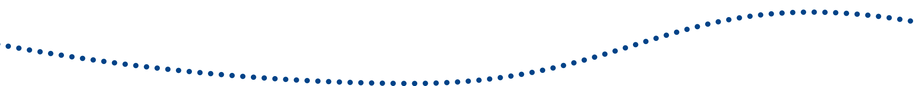

Le défi lancé pour mettre définitivement fin au classique sapin de Noël jetable*, a été joyeusement et collectivement relevé !
Chaque service du siège à Capdenac et du laboratoire de Causse-et-Diège a fièrement présenté son sapin entièrement réalisé à base de matériaux recyclés.
Le jury a élu grand gagnant le service réception des matières premières
Bravo à tous pour votre créativité sans limite !
Nous profitons de l’occasion pour souhaiter nos meilleurs vœux à tous et à toutes et notamment aux équipes sur le terrain que nous verrons en mars pour le prochain séminaire.
Claude et Antoine Lagarde
